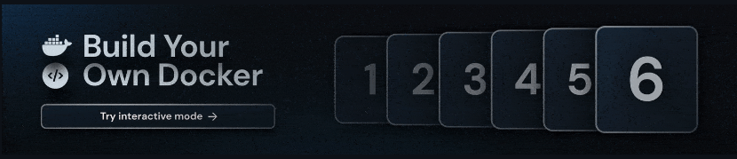
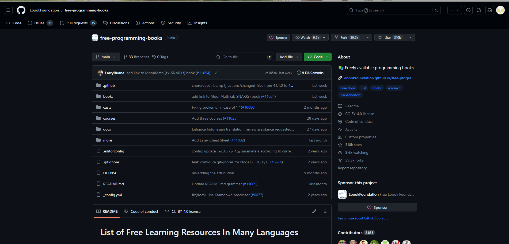
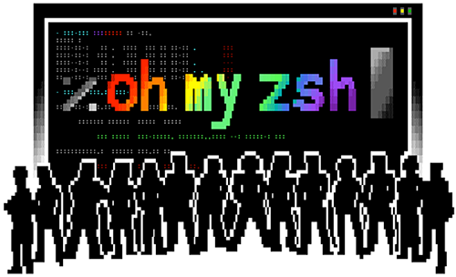
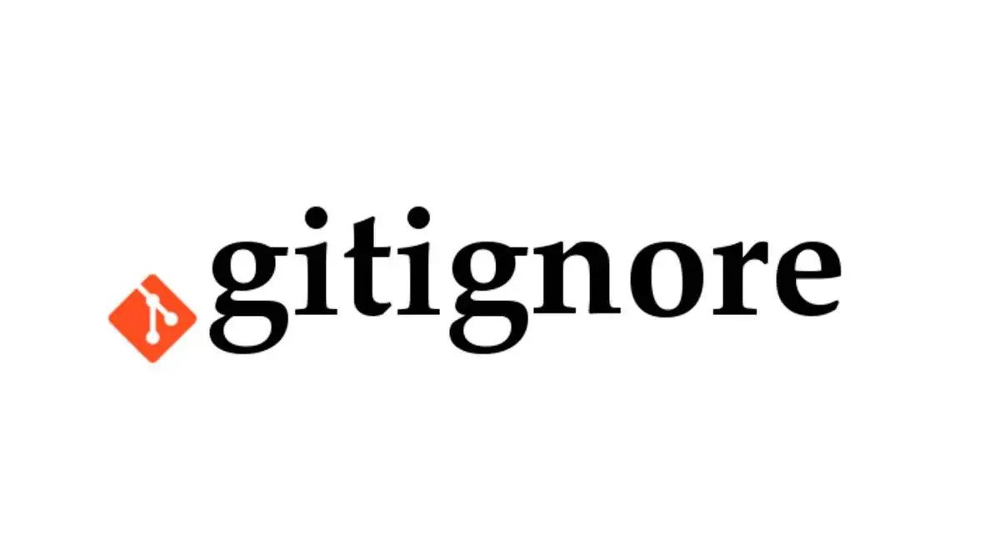

Цей чудовий репозиторій, по суті, є добіркою уроків про розробку власних технологій. У ньому пояснюється, як створити інструмент командного рядка, операційну систему, пошуковий рушій, модуль 3D-рендеринга і багато іншого. Завжди хотіли придумати свою мову програмування? А може, платформу на кшталт Docker або Git? Тоді Build your own X – саме те, що вам потрібно.
Згідно назві, цей репозиторій повинен містити тільки книги з програмування. Однак ними він не обмежується: в ньому є розділи з безкоштовними онлайн-курсами, ресурсами по інтерактивному і спортивному програмуванню, наборами завдань, впорядкування файлів і пісочницями. Хоча тематичних книг всередині, звичайно, більше. І це дійсно крута підбірка.
Oh My Zsh – це фреймворк з відкритим вихідним кодом, розроблений ентузіастами і призначений для управління конфігурацією оболонки zsh. (Zsh – інтерактивна оболонка і потужна скриптова мова, яка використовується багатьма фахівцями.) Репозиторій Oh My Zsh містить плагіни і симпатичні теми для індивідуального налаштування zsh. Звичайно, щоб запустити плагіни, доведеться попотіти. Однак в мережі є відмінні туторіали, та й прикладів інших розробників багато – використовуючи все це, ви зможете налаштувати zsh так, як потрібно саме вам.
Зміст репозиторія точно відображає його назва – всередині знаходиться колекція корисних шаблонів .gitignore. Для кожного нового проекту, який ви встановлюєте в якості сховища на GitHub, необхідно мати файл .gitignore – щоб фільтрувати завантажувані дані. Зміст файлу залежить від проекту і мови. Репозиторій, про який я пишу, містить шаблони практично для всіх мов і фреймворків: Ruby on Rails, Python, Perl, Laravel, Java та ін. В ньому є навіть шаблон для Fortran!
Останній репозиторій містить схеми, що демонструють шляхи вирішення різних проблем, і технології, які потрібно застосовувати, щоб стати успішним фронтенд-, бекенд- або девопс-розробником в 2020 році. Кількість матеріалів може здатися занадто великимою, проте вони дають відмінне уявлення про те, що можливо і що затребуване в нашій області. Репозиторій оновлюється щороку з урахуванням останніх трендів в програмуванні. Сподіваюся, ці репозиторії будуть корисні вам в тій же мірі, що і мені, і за допомогою них ви зможете стати більш просунутими фахівцями. Дякую за увагу!